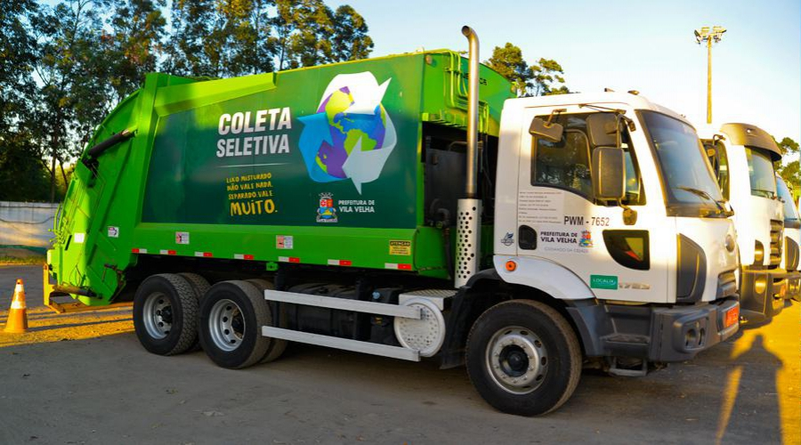

Qual é a importância da Coleta Seletiva?

A coleta seletiva com destino a reciclagem é uma alternativa para
contribuir com a redução da quantidade de resíduos sólidos, diminuindo
o impacto desses resíduos no meio ambiente. É um instrumento para que
todas as pessoas tenham conscientização da sua responsabilidade pelo ciclo dos produtos recicláveis.
A prática da coleta seletiva desempenha um papel essencial, como uma importante fonte de renda para pessoas, como os catadores de materiais recicláveis.